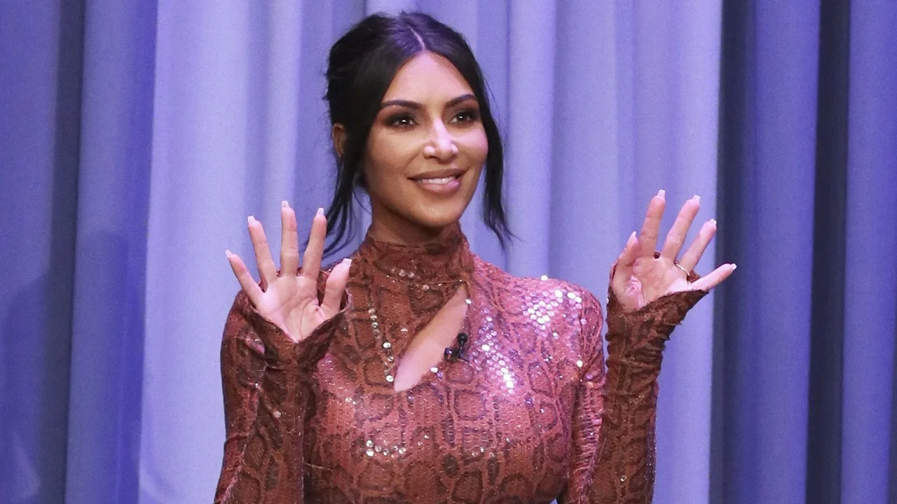
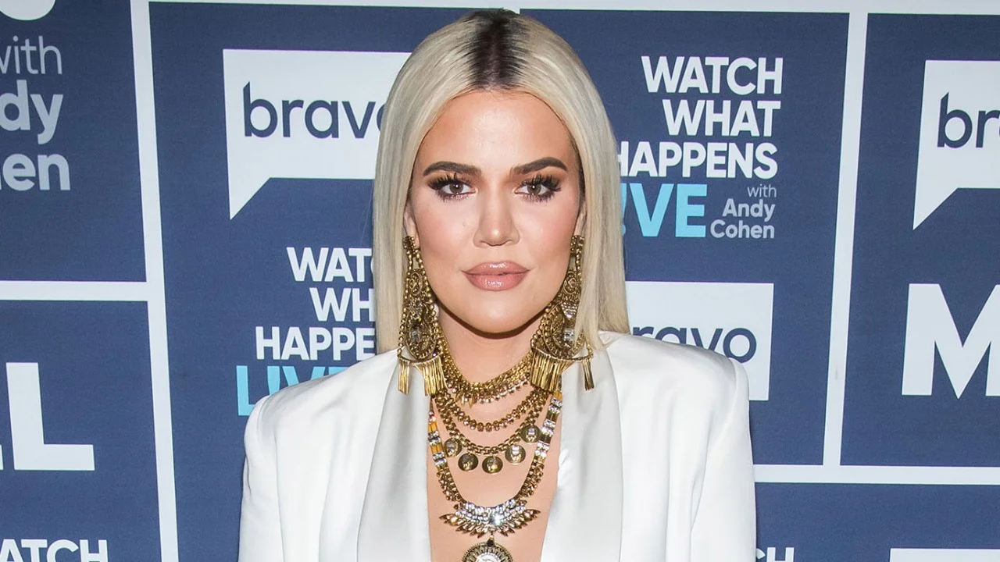
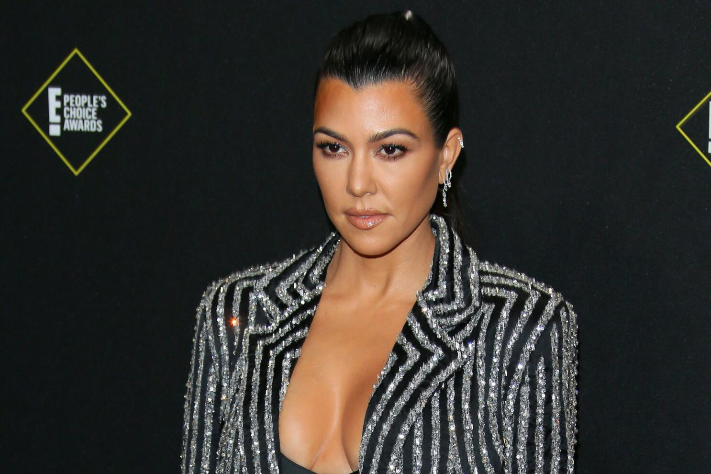
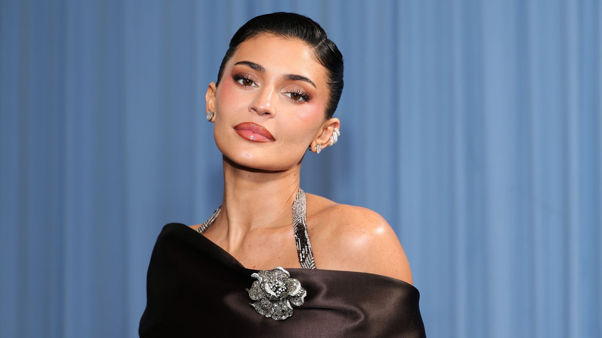

Kim Kardashian
Kim Kardashian is a businesswoman, media personality, and beauty entrepreneur. She founded SKIMS, a shapewear and clothing brand, and KKW Beauty.
- Born: October 21, 1980
- Known for: SKIMS, KKW Beauty, advocacy
America's most talked-about family
The Kardashian-Jenner family is well known for their reality television series, which started in 2007. The family has built a collective empire between fashion, beauty, social media, and entertainment. Their influence on modern pop culture, marketing, and social media trends has been significant.

Kim Kardashian is a businesswoman, media personality, and beauty entrepreneur. She founded SKIMS, a shapewear and clothing brand, and KKW Beauty.

Khloé Kardashian is an entrepreneur and television personality best known for founding Good American, a denim and clothing brand built on inclusive sizing principles.

Kourtney Kardashian is the oldest of the Kardashian siblings and founded Poosh, a lifestyle and wellness platform focused on clean living, healthy recipes, and mindful parenting.

Kendall Jenner is a model and entrepreneur who has graced runways for some of the world's top fashion houses. She is one of the highest-paid models globally and co-founded 818 Tequila.

Kylie Jenner is an entrepreneur and social media influencer who founded Kylie Cosmetics, a beauty brand that became widely known for its lip kits. She later expanded into skincare with Kylie Skin.